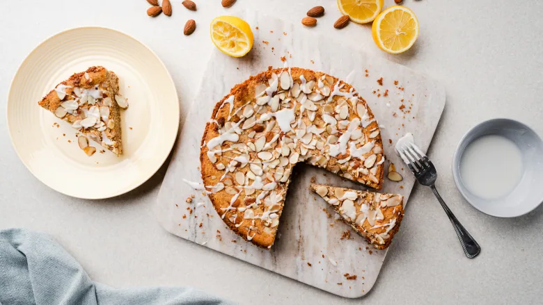

Symbolic and vibrant treats fit for special celebration of summer
Flourless Lemon Ricotta Cake with Almonds

Almond flour and almond meal both work well in this recipe. Almond flour is made from blanched and peeled raw almonds, and has a very pale, unified colour.Almond meal is made from unpeeled raw almonds, which makes a speckle-coloured flour that gives baked goods a darker appearance.
You can make your own using a high-power food processor or blender: working in small batches, blitz almonds until a fine dust is achieved (stop before it turns to nut butter).Sift into a container and return any almond bits back to the food processor to re-blitz. Store in the freezer, in an airtight container, for up to three months.